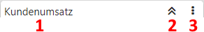
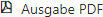

Kopfleiste
In der Kopfleiste stehen die Informationen und Steuerungselemente des Widgets zur Verfügung.

Ø Beschreibung (1)
Im linken Bereich der Kopfleiste wird die Bezeichnung des Widgets angezeigt, welche in der Cockpit Definition oder den Einstellungen (bei einem Datenquellen-Widget) editiert werden kann.
Ø - Zuklappen / Aufklappen (2)
Mit Hilfe der Funktion "Zuklappen" wird das Widget geschlossen bzw. über "Aufklappen" geöffnet. Die zuletzt gewählte Einstellung wird pro Widget benutzerspezifisch gespeichert.
Ø - Menü (3)
Je nach Inhalt eines Widgets stehen unterschiedliche Funktionen zur Verfügung, welche durch Anwahl des Buttons aufgelistet werden.
ü
Handelt es sich um ein
Datenquellen-Widget, so wird durch Anwahl dieses Eintrags das
Einstellungsfenster des Widgets geöffnet.
ü
Bei Datenquellen-Widgets kann mit Hilfe
der Funktion "Widget Filter" der Filter geöffnet werden. In diesem kann die
Datenquelle nach frei definierbaren Kriterien eingeschränkt werden.
ü 
Durch Anwahl dieses Buttons wird der
Inhalt des Widgets auf Vollbild maximiert bzw. wieder minimiert.
ü
Mit Hilfe dieses Eintrags wird das
gesamte Widget mit all seinen Einstellungen (ausgenommen Größe und Position)
exportiert, wobei der Speicherordner via Dateidialog angegeben werden kann.
Achtung
Sollte es sich um ein Widget mit einer Verknüpfung handeln (z.B. LIST-Liste, Datenquelle, Makro, etc.), so wird nur die Verknüpfung selbst, aber nicht das verknüpfte Objekt exportiert.
Hinweis
Der Import erfolgt über die Funktion "Widget importieren", welche im Cockpit-Menü der Quick-Info zur Verfügung steht.
ü
Der Inhalt des Widgets (Datenquelle oder
WinLine Kalender) kann durch Anwahl dieses Eintrag als png-Datei abgespeichert
werden. Die Grafik wird hierbei ohne Hintergrund (d.h. transparent)
ausgegeben.
ü 
Mit Hilfe dieses Eintrags wird der
Inhalt einer Datenquellen-Tabelle, einer Datenquelen-Datentabelle, eines
Datenquellen-Olaps (ohne ggfs. hinterlege Formatierungen), eines Kalenders
(Datenquelle oder WinLine Kalender) oder eines Datenquellen-Kanbans an Microsoft
Excel übergeben.
ü

Durch Anwahl dieses Eintags wird der Inhalt einer Datenquellen-Datentabelle als PDF-Datei ausgegeben.
ü
Bei Widgets des Typs "Olap" steht die
Rohdatenansicht zur Verfügung. Ist diese aktiviert, so wird bei Mausklick auf
eine Zahl die genaue Zusammensetzung des Werts angezeigt.
ü
An dieser Stelle wird angezeigt, wann
die Datenquelle des Widgets zum letzten Mal aktualisiert worden ist. Wird der
Eintrag ausgewählt, so öffnet sich die Datenquellenverwaltung, über welche die
Datenquelle administriert bzw. aktualisiert werden kann (der Fokus liegt hierbei
automatisch auf der aktuellen Datenquelle).
ü
In dem Widget wird eine WinLine
LIST-Liste (Ausgabeart 01 bis 23) ausgegeben. Durch Anwahl des Buttons wird die
Liste in dem definierten Standardausgabeformat dargestellt.
Hinweis
Handelt es sich bei dem Cockpit um ein objektbezogenes INFO-Cockpit, so wird das Icon auch bei OIFs angezeigt. Durch Anwahl wird automatisch das entsprechende INFO-Modul des Objekts geöffnet.
ü
In dem Widget wird eine Datenquellen
ausgegeben. Durch Anwahl des Buttons wird der Inhalt der Datenquellen im Power
Report dargestellt.
ü
Mit Hilfe dieser Funktion wird der
Inhalt des Widgets neu aufgebaut / aktualisiert.